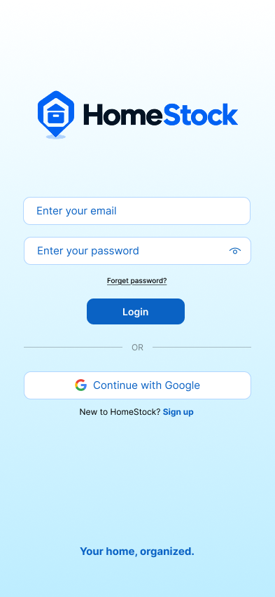
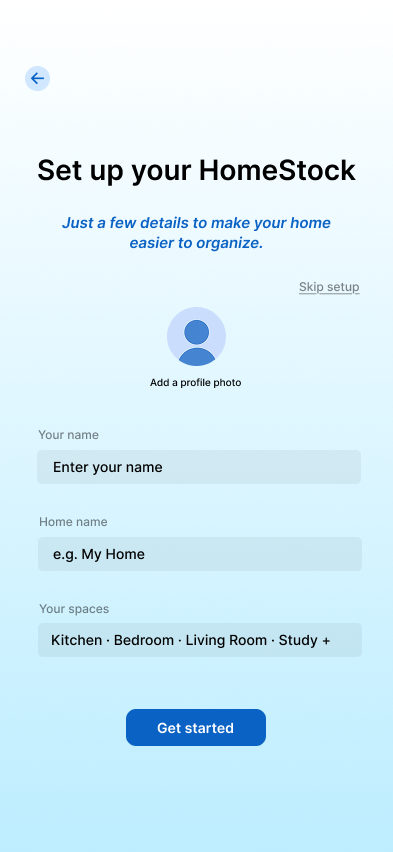
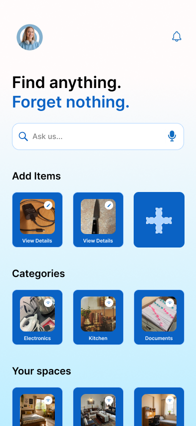
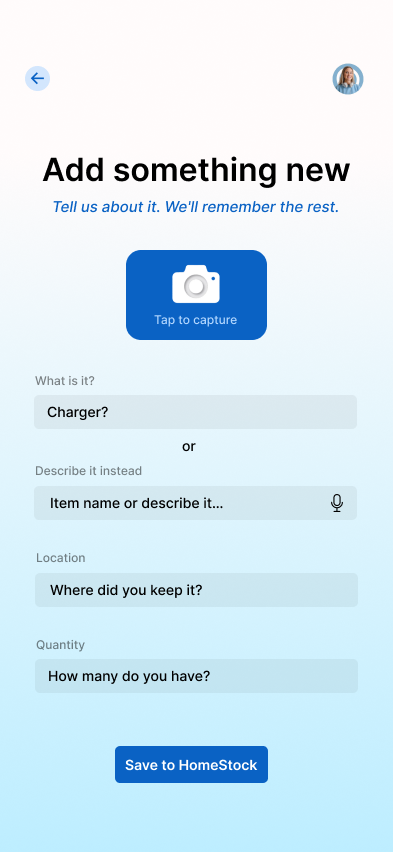
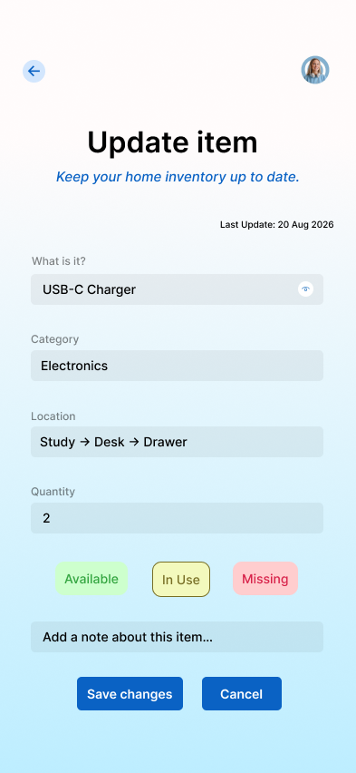
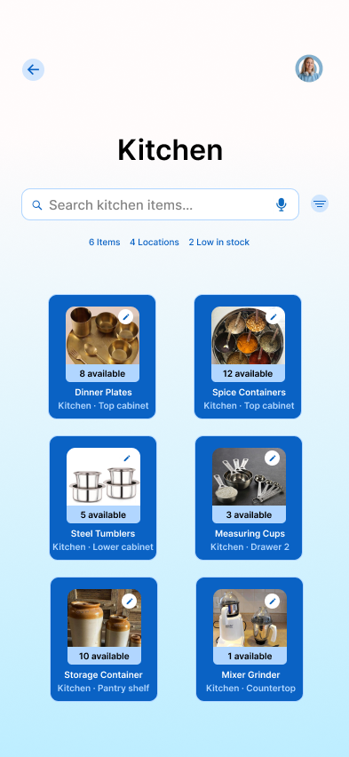
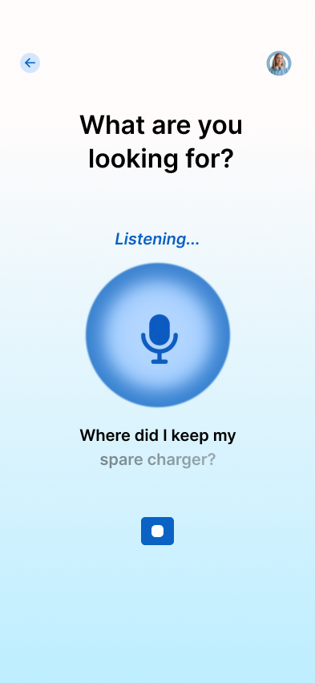
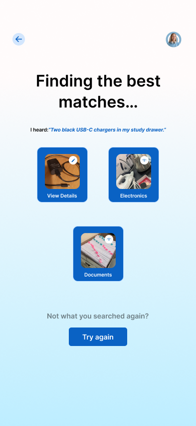

Overview
HomeStock is a household memory system designed to help people remember what they own, where they keep it, and how many they have. By combining physical location hierarchies with AI-assisted voice interaction, HomeStock bridges the gap between physical organization and digital retrieval.
The Problem
People frequently forget where rarely used household items are stored, accidentally buy duplicate goods, lose track of quantities, or constantly need to ask family members where specific items were placed. Physical storage lacks an efficient way to search, leading to friction and wasted time in everyday home management.
Design Challenge
How might we make physical household storage searchable in the same natural, context-rich way people naturally remember things?
Core Product Loop
To ensure minimal effort during both logging and retrieval, the core experience centers on a tight, predictable user loop:
Add an item → Describe/store information → Assign physical location → Save → Search naturally → Find item
Onboarding & Home Setup
The initial experience establishes a personalized structure without overwhelming the user. The login screen welcomes users with a clean visual entry point, leading directly into a structured setup where users define their custom home spaces before populating inventory.


Dashboard & Information Architecture
The primary dashboard presents an intuitive layout organized around natural mental models. Items are categorized by quick addition pathways, top categories, and physical spaces, allowing users to browse systematically or jump straight into natural-language search.

Adding & Updating Items
To minimize data-entry friction, the item logging workflow accommodates camera captures, structured form fields, and direct voice input. The edit interface supports deep physical location mapping (e.g., Study → Desk → Drawer), precise quantity tracking, and item status indicators (Available, In Use, Missing).


Space & Inventory Management
Browsing within specific home spaces gives users full visibility over localized storage. Each space view displays quantity counts, precise storage sub-locations, and status tags to help maintain low-stock items or organize storage units efficiently.

Voice & AI Interaction
Natural-language query and voice input allow users to speak directly to the app. When a user states a query like “Two black USB-C chargers in my study drawer,” the AI interprets the phrase into structured variables (Name, Category, Location Hierarchy, Quantity) while providing confirmation options before finalizing or serving exact search matches.


Key UX Decisions
• Physical Location Hierarchy: Structuring nested locations (e.g., Study → Desk → Drawer) to mimic real-world placement.
• AI Confirmation Pattern: Providing users an editable preview screen to verify AI-parsed information, reducing errors.
• Multi-Modal Input: Supporting photo capture, voice dictation, and manual entry to reduce cognitive load during logging.
• Natural-Language Search: Enabling flexible, context-aware queries instead of rigid tag filtering.
• At-a-Glance Inventory States: Visual badges for stock status (Available, In Use, Missing) for rapid scanning.
Learnings & Product Thinking
Designing HomeStock emphasized the balance between structured data and fluid human memory. The primary design challenge was making physical organization feel effortless—ensuring that inputting data takes less time than searching for missing items manually.